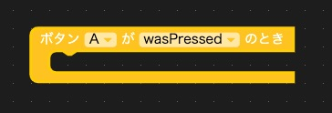

M5StackやM5StickCを使って、面白いことをするコーナー「M5Stackカフェ」。第4回はM5StickCを使ってストップウォッチを作ってみます。
M5StickCは液晶画面（LCD）とボタンがついているので、M5StickCだけでストップウォッチが作れそうです。ということで、今回使うものはM5StickCだけです。
M5StickCのボタンAを押したらストップウォッチが動き出し、もう一度ボタンAを押したらストップウォッチを止めるようにします。ボタンBを押したら、ストップウォッチをゼロクリアするようにします。
プログラムはUIFlow(Blockly)で作ります。UIFlow(Blockly)を使う準備方法は第1回の記事を、UIFlowの操作方法は第2回の記事もご覧ください。
充電も兼ねてUSBケーブルでM5StickCとパソコンをつなぎ、パソコンのブラウザで次のアドレスにアクセスします。
第3回の記事を参考にしてAPIキーを確認して、UIFlowとM5StickCを接続します。
これでUIFlowでM5StickCのプログラムを作る準備は完了です。
ストップウォッチの一番肝心な機能は時間を数えることです。ボタンを押してから次にボタンを押すまでの時間を数えて、表示すれば、ストップウォッチになります。
時間を数える方法はいくつかありますが、比較的簡単で正確なのは「タイマーイベント」を使う方法です。
タイマーイベントはUIFlowの「イベント」メニューの中にあります。
タイマーは時間と「ONE_SHOT」、「PERIODIC」どちらかの動作モードを指定して使います。「ONE_SHOT」は指定した時間が経過したら「あるブロック」を1回実行してくれます。「PERIODIC」は繰り返し「あるブロック」を実行してくれます。
指定した時間が経過した時に実行される「あるブロック」をタイマーハンドラといい、次のような形をしています。
今まで紹介したブロックは「Setup」ブロックから始まるブロックの列のどこかにつなげて、順番が来ると実行されました。タイマーハンドラはどこかにつなげて、順番がくると実行されるのではなく、タイマーで指定した時間が経過すると実行されるブロックです。
タイマーの使い方は、タイマーハンドラーの中身を作り、「タイマーを開始」するブロックで時間と動作モードを指定してタイマーを動かします。
では、「count」という変数を用意して、その値を0.1秒ごとに0.1増やして液晶画面に表示してみましょう。
まず、Labelを液晶画面にドラッグ＆ドロップします。
「Text」という文字をクリックして「rotation」を270に指定して、横向きにします。適当な表示位置になるように「Text」をドラッグ＆ドロップしてください。
「変数」メニューで「count」という名前の変数を作り、「countを□にする」ブロックを「Setup」ブロックの下につなぎ、値を「0」にします。
「タイマーを開始する」ブロックをつなぎ、時間を100ミリ秒（0.1秒）、モードを「PERIODIC」にします。
「タイマーハンドラ」をドラッグ＆ドロップして、その中で「label0」に変数「count」の値を表示します。次に「変数」メニューの「countを1増やす」をつなげます。数字の「1」を「0.1」に変えれば、0.1秒ごとに「count」の値が0.1ずつ増やされ、その数字がLCDに表示できそうですが、「countを1増やす」ブロックは少数を入力するとうまく動きません。そこで、0.1秒ごとに「countを1増やす」ことにして、表示する時に「count」の値を10で割って表示します。割り算をするブロックは、「数学」メニューの「□ ＋ □」という足し算ブロックを使い、「＋」を「÷」に変えて割り算ブロックにします。さらに「テキスト」メニューから「□の小数点以下0桁までのテキスト」というブロックを使い、小数点以下1桁の数字を表示するようにします。
タイマーハンドラができたら、「タイマを開始する」ブロックのタイマーを「timer0」に指定します。プログラムは次のようになります。
これで0.1秒ごとの時間を数える単純なカウンタができました。このカウンタをボタンでスタート/ストップすればストップウォッチになりそうです。
M5StickCには図のようにボタンAとボタンBの2つのボタンがあります。

UIFlowでボタンを扱うブロックも「イベント」メニューにあります。
ボタンの状態は「ボタンAがwasPressedである」ブロックで調べられます。「wasPressed」は前回調べたときから今までにボタンが押されたかどうかを調べます。「wasPressed」の他に「wasReleased」（離された）、「longPress」（長押しされた）、「wasDoublePress」（2度押しされた）ことを調べられます。
試しに、次のようなプログラムでボタンの扱いを見てみましょう。
ボタンAが押されていたらLEDを点け、ボタンAが離されたらLEDを消します。プログラムを実行してM5StickCのボタンAを押すと、押している間LEDが点灯し、ボタンを離すと消えることが確認できます。
もう一つのボタンの扱い方は、ボタンハンドラを使う方法です。

ボタンハンドラは、「wasPressed」（押された）という状態になったらハンドラの中のブロックが実行されるブロックです。
状態は「wasPressed」（押された）、「wasReleased」（離された）、「longPress」（長押しされた）、「wasDoublePress」（2度押しされた）の4種類です。
押している間LEDが点灯し、離すと消えるプログラムは、ボタンハンドラを使うと次のようになります。

ボタンハンドラは、何か別の処理をやりながら、ボタンがある状態になったらそれに対応した処理をするような動作を記述するときに便利です。
ボタンの扱いを見てきたので、ボタンでタイマーの動きを制御してみましょう。
最初の単純なカウンターは、プログラムが始まるとタイマーを動かしていました。今度はボタンAが押されたら、タイマーを動かすようにします。もう一度ボタンAが押されたら、タイマーを止めます。この制御をするために、タイマーが動いているかどうかを示す変数「stop」を作り、最初は「true」、つまりタイマーが止まっているという状態にします。
そして、ボタンハンドラを使い、ボタンAが押された時に、タイマーが止まっていたら、つまり「stop」が「true」ならタイマーを動かして、「stop」を「false」に設定し、逆にタイマーが動いていたらタイマーを止めて、「stop」を「true」に設定します。
これでボタンAでタイマーが制御できるようになります。また、ボタンBが押されたら、「count」変数を0にすることで、ストップウォッチをゼロクリアできます。
プログラムは次のようになります。

プログラムを実行すると、液晶画面に「0」という数字が表示され、ボタンAを押すと0.1秒毎に数字がカウントアップされ、もう一度押すと数字が止まります。ボタンBを押すと数字が0に戻ります。簡単なストップウォッチが出来上がりました。
M5StickCとUIFlowを使うと、比較的簡単に便利な道具が自作できます。しかも自分でプログラミングしているので、自分好みに改造することもできます。皆さんも是非試してみてはいかがでしょう？
2020年になりました。今年の一大イベントではストップウォッチも大活躍するでしょう。ということで今回はストップウォッチを自作してみました。皆さんの日々のトレーニングにもご活用ください。